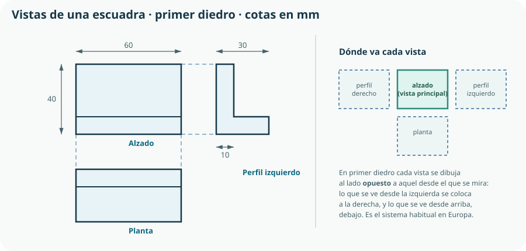
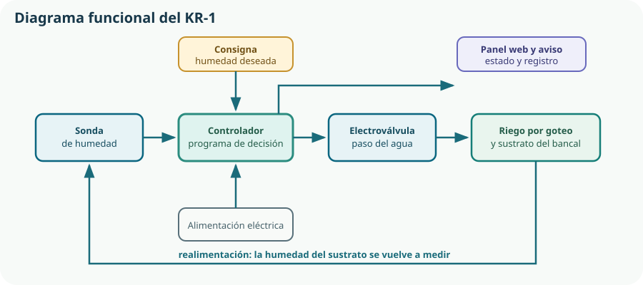

Un proyecto de ingeniería se comunica dibujando. No porque el dibujo sea bonito, sino porque es el único lenguaje capaz de decir, sin ambigüedad, qué forma tiene, cómo se conecta y cómo funciona una solución. En este tema pasaremos por los cuatro registros gráficos que necesita el KR-1 —croquis, vistas acotadas, esquemas y diagrama funcional— y por las tres familias de aplicaciones que el currículo nombra expresamente: CAD, CAE y CAM.
- elegir el registro gráfico adecuado a cada fase del proyecto y a cada destinatario;
- levantar un croquis a mano alzada con proporción y cotas legibles;
- interpretar y dibujar las vistas de una pieza en primer diedro;
- acotar una pieza sin sobrar ni faltar cotas, y usar escalas normalizadas;
- leer un esquema eléctrico, electrónico, mecánico, neumático o de control reconociendo su simbología;
- representar el funcionamiento de un sistema mediante un diagrama funcional por bloques;
- explicar qué hace cada aplicación de la cadena CAD, CAE y CAM y qué información se transmite entre ellas;
- valorar la utilidad de esa cadena en el diseño, el dimensionado y la fabricación de un producto industrial.
1. Para qué se dibuja en ingeniería
En un proyecto hay al menos cuatro preguntas gráficas distintas, y cada una tiene su tipo de dibujo. Confundirlas es la causa habitual de que un plano no sirva para fabricar o de que un esquema no explique nada.
| Pregunta | Tipo de dibujo | Quién lo usa | En el KR-1 |
|---|---|---|---|
| ¿Qué idea tengo? | Boceto o croquis a mano alzada | El propio equipo, en la fase de ideación | Tres disposiciones posibles del depósito, la válvula y la caja. |
| ¿Qué forma exacta tiene? | Plano de piezas: vistas acotadas | Quien fabrica la pieza | Escuadra de sujeción y caja con sus taladros. |
| ¿Cómo se conecta? | Esquema normalizado | Quien monta y quien repara | Esquema eléctrico del controlador y esquema hidráulico del riego. |
| ¿Cómo funciona? | Diagrama funcional por bloques | Cualquiera que deba entender el sistema | Sonda, controlador, válvula y realimentación. |
2. Croquis y bocetos a mano alzada
Un boceto explora una idea; un croquis ya representa una pieza concreta con sus proporciones y sus cotas, pero sin instrumentos de precisión. Los dos se hacen a mano alzada, y los dos siguen siendo imprescindibles en un mundo con software: son más rápidos que cualquier programa y no obligan a decidir lo que aún no está decidido.
Boceto
Rápido, sin cotas, a veces varios en la misma hoja. Sirve para comparar alternativas y para discutir en equipo. Se tira sin pena.
Croquis
Proporcionado, con cotas y con las vistas necesarias. Se levanta delante de la pieza o del espacio real. Es el documento de partida del plano.
Plano
A escala, normalizado, con cuadro de rotulación y tolerancias. Es un documento contractual: define qué se acepta y qué se rechaza.
Cómo se levanta un croquis útil
- Encaja primero. Traza con líneas suaves el rectángulo que contiene la pieza y divídelo para situar los elementos. La proporción se decide aquí, no al final.
- Dibuja después. Repasa las aristas reales con trazo firme y borra el encaje. Las líneas de la pieza deben distinguirse de las auxiliares.
- Mide y anota. Toma las cotas con calibre o metro y escríbelas inmediatamente: una medida que se recuerda de vuelta al aula es una medida perdida.
- Anota lo que no se ve. Material, acabado, espesor de pared, sentido de montaje, roscas. Un croquis con anotaciones vale más que un dibujo perfecto sin ellas.
- Fecha y firma. Un croquis sin fecha no se puede comparar con la versión siguiente, y en un proyecto siempre hay versión siguiente.
3. Vistas: el sistema de proyección
Una pieza es tridimensional y el papel no. La solución normalizada consiste en proyectar la pieza sobre planos perpendiculares y colocar cada proyección —cada vista— en una posición convenida, de modo que quien lo lee sepa desde dónde se está mirando sin que haya que decírselo.

| Vista | Desde dónde se mira | Posición en primer diedro | ¿Se dibuja? |
|---|---|---|---|
| Alzado | De frente | Centro; es la vista principal | Siempre |
| Planta | Desde arriba | Debajo del alzado | Casi siempre |
| Perfil izquierdo | Desde la izquierda | A la derecha del alzado | Si aporta información nueva |
| Perfil derecho | Desde la derecha | A la izquierda del alzado | Solo si la pieza no es simétrica |
| Vista inferior | Desde abajo | Encima del alzado | Raramente |
| Alzado posterior | Desde detrás | En un extremo de la fila | Raramente |
Cuando las vistas no bastan
- Corte o sección: se «parte» la pieza por un plano para mostrar su interior, y el material cortado se raya. Imprescindible en la caja del KR-1, que es hueca.
- Detalle: una zona pequeña se repite ampliada, con su propia escala indicada.
- Perspectiva: una vista axonométrica o isométrica no sustituye a las vistas, pero ayuda a entender la pieza de un golpe. Se añade como apoyo, nunca como plano de fabricación.
- Aristas ocultas: se dibujan con línea discontinua fina; solo se representan cuando aclaran algo, no todas por sistema.
4. Acotación y escalas
Acotar es indicar las dimensiones necesarias para fabricar la pieza. La palabra clave es necesarias: ni una menos, porque entonces el taller tendría que inventarse una medida; ni una más, porque dos cotas que dicen lo mismo acaban contradiciéndose en la siguiente revisión del plano.
Cada cota, una vez
Una dimensión se acota en la vista donde se ve con más claridad, y solo en esa. Repetirla es sembrar un error futuro.
Fuera de la pieza
Las cotas se colocan en el exterior del contorno, con líneas auxiliares finas que no toquen las aristas.
Desde una referencia
Los taladros se sitúan desde una cara o un eje de referencia, no en cadena: así los errores no se acumulan.
Legible siempre
Las cifras se leen en horizontal o girando el plano 90° en un solo sentido, nunca al revés.
Las escalas normalizadas son múltiplos y submúltiplos convenidos: 1:1 (tamaño natural), reducciones como 1:2, 1:5, 1:10, 1:20 y ampliaciones como 2:1, 5:1, 10:1. La escala se indica siempre en el cuadro de rotulación, y una regla de oro acompaña a esa indicación:
las cotas se escriben en dimensiones reales independientemente de la escala del dibujo
Es decir: un agujero de 8 mm dibujado a escala 2:1 mide 16 mm en el papel y lleva escrito «8». Nadie mide un plano con una regla para fabricar; se lee la cota.
5. Esquemas normalizados
Un plano dice qué forma tiene una pieza. Un esquema dice cómo se conectan los elementos de un sistema, y renuncia deliberadamente a la forma y a la posición reales: lo que le importa es la función y la conexión. Un esquema eléctrico no indica por dónde va el cable, sino qué está unido con qué.
| Tipo | Qué representa | Símbolos característicos | Dónde se estudia |
|---|---|---|---|
| Eléctrico | Fuentes, conductores, protecciones, receptores y su conexión. | Generador, interruptor, lámpara, motor, fusible, toma de tierra. | Temas 10 y 21 |
| Electrónico | Componentes de señal y su interconexión. | Resistencia, condensador, diodo, LED, transistor. | Tema 11 |
| Mecánico o cinemático | Cadena de transmisión: qué mueve a qué y con qué relación. | Engranaje, polea, correa, eje, soporte. | Temas 7 a 9 |
| Neumático o hidráulico | Circuito de fluido: generación, mando y actuadores. | Cilindro, válvula, bomba, depósito, conducción. | Tema 21 (agua); neumática en 2.º |
| De control | Flujo de la señal entre sensores, controlador y actuadores. | Bloques, sumadores, punto de realimentación. | Temas 17 a 19 |
Cómo se lee un esquema sin perderse
- Localiza la alimentación y decide un sentido de lectura: en los esquemas eléctricos, habitualmente de la fuente hacia los receptores; en los de control, de la entrada hacia la salida.
- Sigue una sola rama hasta el final antes de empezar otra. Intentar entender todo a la vez es lo que hace que un esquema parezca incomprensible.
- Identifica los elementos de mando —interruptores, válvulas, contactos— y pregúntate qué cambia cuando cada uno actúa.
- Comprueba las referencias. Cada componente lleva una marca (R1, K2, Y1) que remite a la lista de materiales. El esquema y la lista se leen juntos.
6. Diagramas funcionales
El criterio 1.4 pide elaborar documentación técnica «generando diagramas funcionales». Un diagrama funcional representa un sistema como un conjunto de bloques unidos por flechas: cada bloque es una función —medir, decidir, accionar— y cada flecha, la información, la energía o la materia que pasa de uno a otro. Es el dibujo más abstracto de todos y, por eso, el que mejor se entiende.

Tres cosas que un diagrama funcional deja ver y un esquema esconde
- Los lazos. Si hay una flecha que vuelve atrás, hay realimentación, y eso cambia por completo el comportamiento del sistema.
- Los puntos únicos de fallo. Un bloque por el que pasa todo —el controlador— es el que hay que proteger y el que hay que poder sustituir.
- Las fronteras del proyecto. Lo que queda fuera de los bloques es lo que no vas a construir. Dibujar el límite es la manera más rápida de negociar el alcance de una entrega.
7. CAD: el diseño de la geometría
CAD son las siglas de Computer Aided Design, diseño asistido por ordenador. Sustituye al tablero de dibujo, pero aporta algo que el tablero no podía dar: el modelo deja de ser un conjunto de líneas y pasa a ser una descripción de la geometría que el ordenador entiende y puede recalcular.
| Modo | En qué consiste | Para qué se usa en el KR-1 |
|---|---|---|
| Dibujo 2D | Vistas, cotas y esquemas con precisión numérica. | Plano de la escuadra y de la plantilla de taladros. |
| Modelado 3D de sólidos | Construir el volumen por operaciones: extruir, revolucionar, vaciar, redondear. | La caja hueca con su tapa, sus nervios y su paso de cables. |
| Modelado paramétrico | Las medidas son variables con restricciones; cambiar una recalcula el modelo. | Cambiar el diámetro de la válvula y que el alojamiento se adapte solo. |
| Ensamblaje | Montar varias piezas con sus relaciones de posición. | Comprobar que la placa, la válvula y los cables caben dentro de la caja. |
| Generación de planos | Obtener vistas, cortes y detalles automáticamente desde el modelo 3D. | El plano de fabricación, que se actualiza si cambia el modelo. |
Formatos: el detalle que decide si podrás seguir trabajando
Cada programa guarda su modelo en un formato propio. Para intercambiar geometría entre programas distintos se usan formatos neutros: STEP conserva la geometría exacta y es el adecuado para seguir editando o para enviar a un taller; STL aproxima la superficie con triángulos y sirve para imprimir en 3D, pero pierde la información de diseño. Guardar solo el STL de una pieza equivale a guardar la fotografía de un documento en lugar del documento.
8. CAE: el análisis y la simulación
CAE, Computer Aided Engineering, agrupa las aplicaciones que analizan el comportamiento de lo que el CAD ha definido. El CAD responde a «¿qué forma tiene?»; el CAE, a «¿aguantará?», «¿se calentará?», «¿circulará el agua?».
Análisis estructural
Tensiones y deformaciones bajo carga. ¿Se dobla la escuadra con el depósito lleno?
Análisis térmico
Temperaturas y disipación. ¿Cuánto sube la temperatura dentro de una caja cerrada al sol?
Fluidos
Caudales y pérdidas de carga. ¿Llega suficiente agua al último gotero?
Cinemática y dinámica
Movimientos, choques y esfuerzos en mecanismos. Se usará en el Bloque C.
Simulación de circuitos
Tensiones y corrientes antes de montar. Se usará en los bloques D y F.
Simulación de control
Respuesta del lazo cerrado ante una perturbación. Tema 17.
La técnica más extendida en análisis estructural y térmico es el método de los elementos finitos: el programa divide la pieza en muchos elementos pequeños, plantea las ecuaciones en cada uno y resuelve el conjunto. El resultado se presenta como un mapa de colores muy convincente, y ahí está el peligro.
9. CAM: la definición y el control de la fabricación
CAM, Computer Aided Manufacturing, traduce la geometría en instrucciones de máquina. Su pregunta es «¿cómo se hace?»: qué herramienta, en qué orden, a qué velocidad y siguiendo qué trayectoria.
El modelo procedente del CAD, con las cotas y tolerancias que hay que conseguir.
Decidir el proceso y el orden de operaciones: qué se desbasta, qué se acaba, cómo se sujeta la pieza, cuántas caras hay que mecanizar.
Herramienta, velocidad de corte, avance, profundidad de pasada; o, en impresión 3D, altura de capa, relleno, temperatura y soportes.
El CAM calcula las trayectorias y produce el código de control numérico (código G) que la máquina ejecutará.
Se comprueba en pantalla que la herramienta no choca con la mordaza ni con la propia pieza, y cuánto va a tardar.
Se ejecuta el programa y se mide la pieza obtenida contra el plano: vuelta al Tema 2.
10. La cadena CAD-CAE-CAM completa
El criterio 3.3 pide conocer estos programas «valorando su utilidad en los procesos de diseño, dimensionado y fabricación de un producto industrial». La utilidad no está en cada uno por separado, sino en que el modelo geométrico es el mismo a lo largo de todo el recorrido: se define una vez y se reutiliza para analizar y para fabricar.
| Aplicación | Pregunta que responde | Entrada | Salida |
|---|---|---|---|
| CAD | ¿Qué forma y qué medidas tiene? | Requisitos y croquis | Modelo 3D, planos acotados y lista de piezas |
| CAE | ¿Se comportará como esperamos? | Modelo 3D, material y cargas | Tensiones, temperaturas, caudales; propuestas de cambio |
| CAM | ¿Cómo se fabrica y en cuánto tiempo? | Modelo 3D y proceso elegido | Trayectorias, código G y tiempo estimado |
Comprueba lo que has aprendido
Este tema se demuestra con documentos gráficos que otra persona pueda usar, no con dibujos bonitos.
| Aspecto | Qué debes demostrar | Evidencias posibles |
|---|---|---|
| Croquis y vistas | Que levantas un croquis proporcionado y pasas de él a un plano con las vistas necesarias. | Croquis fechado con anotaciones, plano en primer diedro con alzado bien elegido y líneas de correspondencia coherentes. |
| Acotación | Que acotas lo necesario, desde referencias, sin repetir cotas y con tolerancia en las dimensiones críticas. | Plano acotado, cuadro de rotulación completo con escala, sistema de proyección y tolerancia general. |
| Esquemas y diagrama funcional | Que usas simbología normalizada y que tu diagrama de bloques explica el sistema sin leyenda. | Esquema eléctrico con referencias que remiten a la lista de materiales; diagrama funcional de una página con el lazo de realimentación visible. |
| CAD, CAE y CAM | Que modelas con restricciones, compruebas interferencias, simulas con criterio y conoces los límites del proceso de fabricación. | Modelo paramétrico con un cambio de cota propagado, informe de interferencias, una simulación con sus hipótesis declaradas y los parámetros de fabricación elegidos. |
Prueba definitiva: manda tus planos a otro equipo y pídeles que fabriquen la pieza. Si sale distinta, el problema está en el plano, no en sus manos.
Glosario del tema
- Acotación
- Indicación en un plano de las dimensiones necesarias para fabricar la pieza, con sus tolerancias.
- Alzado
- Vista principal de una pieza, obtenida al proyectarla mirándola de frente.
- Arista oculta
- Borde de la pieza que no se ve desde el punto de vista de la vista dibujada; se representa con línea discontinua fina.
- Boceto
- Dibujo rápido a mano alzada usado para explorar y comparar ideas, sin cotas.
- CAD
- Diseño asistido por ordenador: definición de la geometría, el ensamblaje y los planos.
- CAE
- Ingeniería asistida por ordenador: análisis y simulación del comportamiento de lo diseñado.
- CAM
- Fabricación asistida por ordenador: definición del proceso y generación del programa de máquina.
- Código G
- Lenguaje de instrucciones que gobierna el movimiento de una máquina de control numérico.
- Croquis
- Dibujo a mano alzada de una pieza concreta, proporcionado y acotado, sin escala rigurosa.
- Cuadro de rotulación
- Recuadro de un plano con autoría, fecha, escala, sistema de proyección, material, tolerancia general y versión.
- Diagrama funcional
- Representación de un sistema por bloques de función unidos por flechas de información, energía o materia.
- Elementos finitos
- Método de cálculo que divide una pieza en elementos pequeños para resolver su comportamiento por aproximación.
- Ensamblaje
- Conjunto de piezas modeladas con sus relaciones de posición, que permite comprobar encajes e interferencias.
- Escala
- Relación entre la dimensión dibujada y la dimensión real de la pieza.
- Esquema
- Representación de la conexión funcional entre los elementos de un sistema, con simbología normalizada, sin forma ni posición reales.
- Interferencia
- Situación en la que dos piezas de un ensamblaje ocupan el mismo espacio.
- Modelado paramétrico
- Modelado en el que las dimensiones son variables con restricciones, de modo que un cambio recalcula el modelo.
- Optimización topológica
- Técnica de CAE que elimina el material que no soporta carga para reducir el peso de una pieza.
- Planta
- Vista de una pieza obtenida al proyectarla mirándola desde arriba.
- Primer diedro
- Sistema de proyección europeo en el que cada vista se coloca al lado opuesto a aquel desde el que se mira.
- Sección o corte
- Representación de la pieza cortada por un plano para mostrar su interior, con el material cortado rayado.
- STEP
- Formato neutro de intercambio que conserva la geometría exacta de un modelo y permite seguir editándolo.
- STL
- Formato que aproxima la superficie de un modelo con triángulos; sirve para fabricar, no para editar.
- Vista
- Proyección de una pieza sobre un plano, colocada en la posición que fija el sistema de proyección.
Resumen esencial
- En un proyecto hay cuatro preguntas gráficas —qué idea, qué forma, cómo se conecta, cómo funciona— y cada una tiene su tipo de dibujo.
- Un dibujo técnico es correcto si alguien competente puede fabricar, montar o entender sin preguntar.
- El boceto explora, el croquis representa una pieza concreta con cotas y el plano es un documento contractual a escala y normalizado.
- En primer diedro, la planta se dibuja debajo del alzado y el perfil izquierdo a su derecha; el símbolo del sistema evita piezas en espejo.
- Elegir bien el alzado ahorra vistas, secciones y cotas en todo el plano.
- Se acotan las dimensiones necesarias, una sola vez, desde referencias y fuera del contorno; las cifras se escriben siempre en medidas reales, sea cual sea la escala.
- Una cota sin tolerancia está incompleta; lo habitual es una tolerancia general en el cuadro de rotulación y tolerancias propias solo en las cotas críticas.
- Un esquema renuncia a la forma y a la posición para mostrar la conexión funcional, y usa simbología normalizada: inventarse un símbolo destruye su utilidad.
- Un diagrama funcional por bloques revela los lazos de realimentación, los puntos únicos de fallo y las fronteras del proyecto.
- CAD define la geometría; el modelado paramétrico hace barato el rediseño y el ensamblaje detecta interferencias antes de fabricar.
- CAE analiza el comportamiento, pero su resultado depende de las hipótesis: sirve para decidir qué ensayar, no para sustituir el ensayo.
- CAM traduce la geometría en trayectorias y código G; el laminador de una impresora 3D es un CAM.
- La cadena CAD-CAE-CAM vale porque el modelo es el mismo en los tres pasos, y funciona como un bucle: se itera en la pantalla para no iterar en el taller.
Fuentes y recursos fiables
- [1] UNE — Asociación Española de Normalización. Catálogo de normas de dibujo técnico y simbología (series UNE-EN ISO 5457, UNE-EN ISO 129 y UNE-EN 60617).
- [2] CEN-CENELEC — Organismos europeos de normalización (en inglés).
- [3] FreeCAD — CAD paramétrico de código abierto. Documentación y tutoriales.
- [4] Tinkercad. Modelado 3D y simulación de circuitos en el navegador.
- [5] STEP Tools — Resumen de la norma ISO 10303 (STEP) de intercambio de modelos de producto (en inglés).
- [6] Decreto 64/2022, de 20 de julio (BOCM). Currículo de Tecnología e Ingeniería I, bloque A y criterios 1.4 y 3.3.